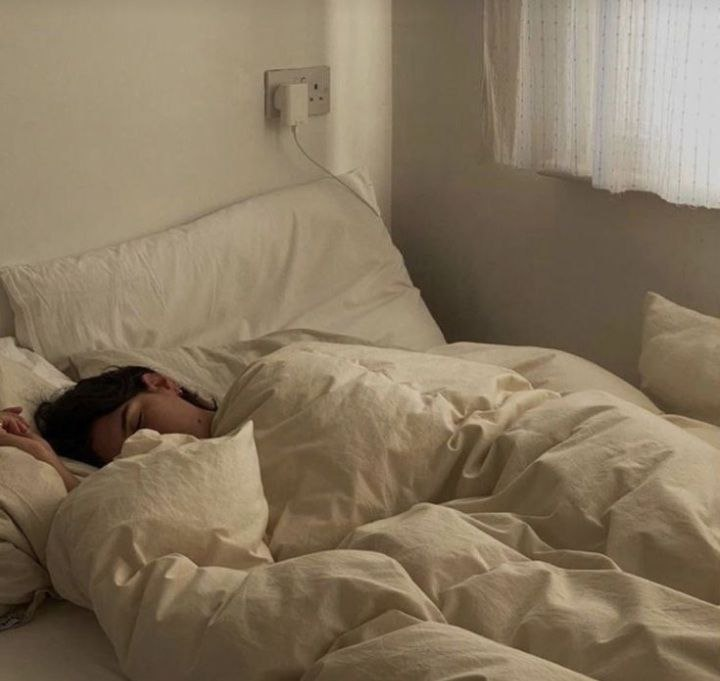

У здоровому
тілі,
здоровий
дух
Здоровий спосіб життя, в наш надзвичайно конкурентний час, є однією з необхідних умов професійного успіху, а отже, і професійної самореалізації особистості будь-якої людини. Бути здоровим та щасливим – природне прагнення людини. На жаль, у сучасному суспільстві ми часто зустрічаємося з надто легковажним ставленням до свого здоров’я. Таке недобре ставлення до себе, як: свідоме паління, алкоголізм, наркоманія, лінощі, неорганізованість, переїдання та недобре агресивне ставлення до навколишнього життя, до людей може бути тільки при несвідомому ставленні до найдорожчого, що має людина,– це здоров’я і життя.
Заводь нові знайомства. Розпочинай першим розмову з незнайомими за будь-яких обставин. У сучасному суспільстві дуже важливо вміти будувати стосунки та мати активну життєву позицію. Аби підтримка розмови не була проблемою — постійно розширюй свій кругозір. Захоплюйся усім новим: експериментуй зі своєю зовнішністю, не бійся пробувати екстремальні види спорту, екзотичні страви. Не засмучуйся через дурнички, не допускай дратівливості через дрібнички. Боягузлива та роздратована людина не притягне до себе успіх ніколи! Щиро вір, що сто відсотків ти матимеш успіх. Не повинно бути ніяких сумнівів у чудовому майбутньому! Найголовніше правило: люби та цінуй себе! Ти — найкращий!

Для підтримання психологічного здоров'я можна виконати декілька простих порад:
• спати 7-9 годин, адже як ми знаємо, для фізичного здоров'я важливий здоровий сон так і для психологічного;
• дотримуватися звичного режиму дня, як для організму так і для психіки є стресом постійна зміна режиму, наш організм як механізм, котрий потребує сталого розкладу роботи;
• позитивні думки, психологи стверджують, що саме позитивне мислення є однією з основ психологічного здоров'я. Коли ми в гарному настрої, наші думки направлені в позитивне русло, то навіть морозна погода за вікном буде для нас причиною для посмішки;
• спілкування з рідними та друзями, це ще одне джерело звідки ми можемо брати гарний настрій та враження;
• заняття улюбленою справою чи хобі, проводячи вільний час займаючись улюбленими справами настрій буде добрий, адже коли займаєшся чимось з насолодою, то настрій в тебе легкий і теплий.

Більшість людей вважає себе здоровими, якщо у них немає ознак порушення саме фізичного стану:
- нічого не болить;
- немає порушення сну;
- немає порушення травлення;
- відсутні проблем зі шкірою та волоссям;
- здорові зуби;
- немає скарг на загальну слабкість та швидку втомлюваність.
Проте здоров’я – це не тільки відсутність хвороб і фізичних дефектів, а також духовний стан, соціальне благополуччя. Іншими словами ці люди можуть мати захворювання, що не виявляються жодними аналізами і пов’язані з порушенням їхньої ментальної (емоційної, інтелектуальної чи духовної) сфери. Наше психологічне благополуччя залежить від того, що ми думаємо про себе, як долаємо стреси, засвоюємо інформацію і приймаємо рішення. Найважливішим критерієм психологічного благополуччя є відчуття психологічної рівноваги, яку пов’язують із гармонійною організацією психіки та її можливістю адаптуватися до стресів, життєвих труднощів.
Висновок
Здоров’я – це найбільший скарб людини бо саме воно є запорукою не тільки щасливого майбутнього, а й багатьох інших речей: успіху, стабільності, у деяких випадках – перемоги. Якщо здоров’я не стоїть серед наших пріоритетів сьогодні, то через деякий час ця байдужість дасть про себе знати. Людина, яка в молодості не шанувала свого фізичного стану, не почуватиметься добре в старості. Ми всі знаємо, що купити здоров’я неможливо, тому його потрібно зберігати і зміцнювати змолоду. Найсуттєвіше на здоров’я впливає наш спосіб життя. Саме тому першочерговим завданням кожного з нас має бути дотримання здорового способу життя. Це спосіб життя людини, спрямований на профілактику хвороб і зміцнення здоров’я. Він включає такі принципи, як дотримання режиму дня, раціональне харчування, фізичну культуру, дотримання правил гігієни, відсутність шкідливих звичок, доброзичливе ставлення до оточуючих.
• Заводь нові знайомства. Розпочинай першим
розмову з незнайомими за будь-яких обставин. У
сучасному суспільстві дуже важливо вміти
будувати стосунки та мати активну життєву позицію. Аби підтримка розмови не була проблемою постійно розширюй свій кругозір.
• Захоплюйся усім новим: експериментуй зі своєю зовнішністю, не бійся пробувати екстремальні види спорту, екзотичні страви.
• Не засмучуйся через дурнички, не допускай Дратівливості через дрібнички. Боягузлива та роздратована людина не притягне до себе успіх
ніколи! Щиро вір, що сто відсотків ти матимеш успіх. Не повинно бути ніяких сумнівів у чудовому
майбутньому!
• Найголовніше правило: люби та цінуй себе! Ти -
найкращий!